中断在程序里长什么样
先分清图里标红的两处，后面讲的寄存器都围绕它们展开。
竖线表示常规程序的执行流程：一直往下执行，中途左侧出现一个突发事件，程序转去执行右边方框里的代码，执行完再回到原来的位置继续。
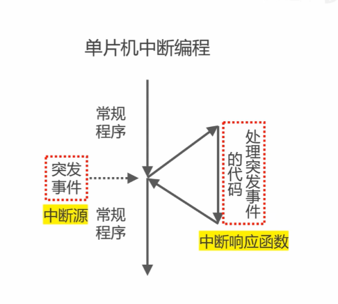
写一段中断程序需要两样东西：一个能触发它的来源（这里是按键），一段足够短的响应代码（这里是翻转一个引脚）。图里的返回箭头要留意——中断执行完回到被打断的那一行，不是从头再来。这一层切换由硬件和编译器完成，写代码时不必处理，但它决定了后面那些寄存器各自管什么。
先看这个实验要什么
两盏 LED：一盏自己闪，一盏受按键控制。先用最直接的写法试一遍，问题会显出来。
两盏灯
一红一绿两盏 LED：绿灯亮两秒、灭两秒，红灯受按键控制，按一下亮，再按一下暗。绿灯那部分按最基础写 GPIO 电平的思路，写在 while 循环里：
while (1)
{
HAL_GPIO_WritePin(LED_GREEN_GPIO_Port, LED_GREEN_Pin, GPIO_PIN_SET);
HAL_Delay(2000);
HAL_GPIO_WritePin(LED_GREEN_GPIO_Port, LED_GREEN_Pin, GPIO_PIN_RESET);
HAL_Delay(2000);
}卡住的地方就在 HAL_Delay(2000)。这两秒里 CPU 耗在等待上，while 循环里排在后面的代码全部停着。如果把红灯的判断顺着写下去，按下按键的那一刻程序正卡在 Delay 里，等它返回早就错过了——灯该亮的时候没亮，实际反应完全不对。
轮询为什么行不通
轮询的写法解决不了这件事：主程序卡在 Delay 里，就没有余力同时读引脚。换句话说，while(1) 里同一时刻只能推进一件事，两件事要各按各的节奏走，就得让其中一件能打断另一件。
中断把方向反过来：不是主程序去问按键，而是按键来打断主程序。
CubeMX 里要动的三处
新建工程、选好芯片之后，这次配置落在三个地方：引脚、GPIO 参数、NVIC。
引脚：PB12 交给 EXTI12
在芯片图上找到 PB12，左键点开功能列表，选 GPIO_EXTI12。这一项在列表最底下，选中后引脚变绿，右边出现 KEY1——这是给引脚起的标签，生成代码时会变成 KEY1_Pin 和 KEY1_GPIO_Port 两个宏，代码里不必到处写端口号和引脚号，方便阅读程序。
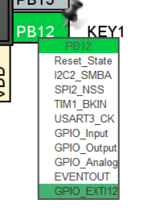
GPIO 参数：浮空 + 下降沿
接着在左侧 GPIO 设置里改两行。GPIO mode 一共有六个选项，前三个以 External Interrupt 开头，后三个是 External Event。两者的区别在于结果要不要通知 CPU：事件那条路经脉冲发生器，不进 NVIC，这个实验用不上。
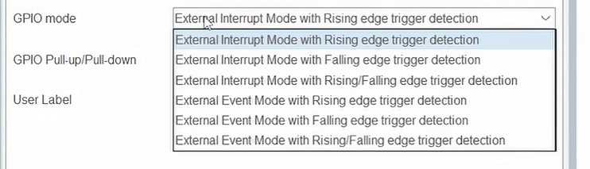
前三个中断选项的注释分别是上升沿、下降沿、上升/下降沿都触发：
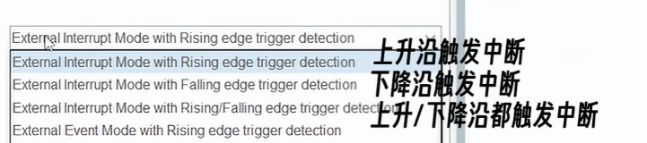
这次用下降沿。原因在电路上：
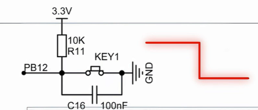
松开时引脚被拉高，按下时接到地，电平从高变低，所以选 External Interrupt Mode with Falling edge trigger detection。同一块面板上的 GPIO Pull-up/Pull-down 选 Floating：外部已经有 10K 上拉，芯片内部不必再挂。
电路图上的 C16：按键两端还并了一只 100nF 电容，是配套学习套件带的硬件消抖。手上没有配套板子的话可以不用它，第 5 节的软件消抖处理的是同一件事。
NVIC：放行这条中断线
进 NVIC 面板，表格里找到 EXTI line[15:10] interrupts，把 Enabled 勾上。不勾这一项，边沿检测和挂起位都照常工作，信号到 NVIC 就进不来了。
同一张表里还有一行 Time base: System tick timer，它的 Preemption Priority 要小于 EXTI 那一行。这次 SysTick 留 0，EXTI 设 1。这条设置单独看不容易明白，第 8 节会讲清它的作用——设反了，中断里调 HAL_Delay 会把板子卡死。
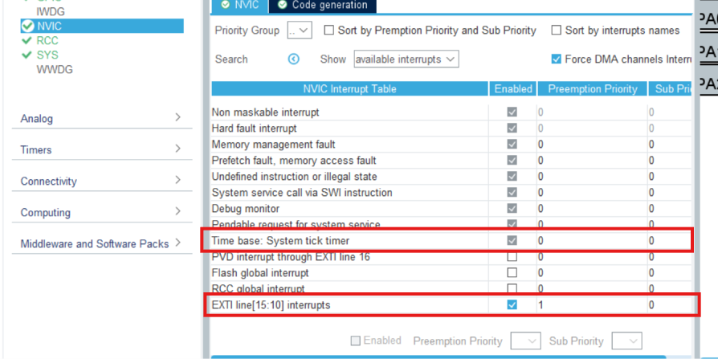
被打断之后跑的那段代码
CubeMX 生成的空函数摆在那儿，要动的就是 USER CODE 之间的几行。
生成代码后，stm32f1xx_it.c 里会多出一个空函数 EXTI15_10_IRQHandler。按键按下时执行的就是它。名字里没有 12，因为 EXTI10 到 EXTI15 共用一条向量，这六条线都由这一个函数处理。
void EXTI15_10_IRQHandler(void)
{
/* USER CODE BEGIN EXTI15_10_IRQn 0 */
HAL_GPIO_TogglePin(LED_RED_GPIO_Port, LED_RED_Pin);
/* USER CODE END EXTI15_10_IRQn 0 */
HAL_GPIO_EXTI_IRQHandler(KEY1_Pin);
/* USER CODE BEGIN EXTI15_10_IRQn 1 */
/* USER CODE END EXTI15_10_IRQn 1 */
}自己写的代码必须落在 USER CODE BEGIN 和 END 之间。CubeMX 重新生成工程时只保留这块内容，写在别处的代码会被覆盖掉。HAL_GPIO_TogglePin 把引脚输出翻转，亮变暗、暗变亮，按键控制红灯的逻辑就这一句。下面那行 HAL_GPIO_EXTI_IRQHandler(KEY1_Pin) 是模板自带的，它的作用在第 7 节末尾会讲到。
第一版：翻转电平
这样写出来，绿灯还在按自己的节奏亮灭，红灯随时能按。原因是中断占用的时间很短：主程序的执行被分成几段，中间夹着几次中断处理，之后接着往下执行。
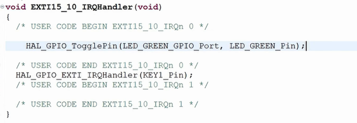
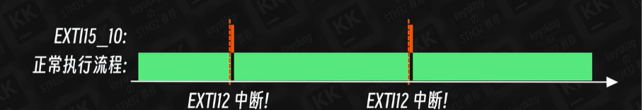
按键会抖
机械触点在闭合的那几毫秒里会弹跳，一次按压可能被当成好几次中断。
第一版能跑，但实际按下时反应不对。按下和抬起的那几毫秒里触点会弹跳，引脚上收到的是一串下降沿，中断不止进一次，灯可能亮暗两下——表面上看就是「按一下，有时候亮有时候不亮」。
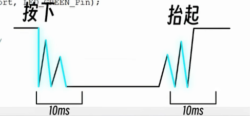
先等 10ms
处理办法是等一段时间：进中断先 HAL_Delay(10) 把抖动那一段等过去，再读一次引脚，仍然是低电平才认为真的按下了。
void EXTI15_10_IRQHandler(void)
{
/* USER CODE BEGIN EXTI15_10_IRQn 0 */
HAL_Delay(10);
if (HAL_GPIO_ReadPin(KEY1_GPIO_Port, KEY1_Pin) == GPIO_PIN_RESET) {
HAL_GPIO_TogglePin(LED_RED_GPIO_Port, LED_RED_Pin);
}
/* USER CODE END EXTI15_10_IRQn 0 */
HAL_GPIO_EXTI_IRQHandler(KEY1_Pin);
/* USER CODE BEGIN EXTI15_10_IRQn 1 */
/* USER CODE END EXTI15_10_IRQn 1 */
}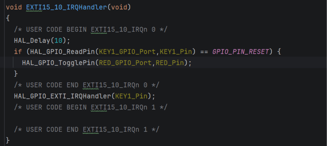
这段代码能成立，前提是中断里 HAL_Delay 可以使用——也就是第 3 节里那两个优先级没有设反。原因在第 7 节的寄存器链路和第 8 节的优先级里。
实机跑一遍
功能对了之后录了一段：绿灯照旧闪，红灯按一下变一次。
接上面包板录了一段：绿灯亮两秒灭两秒，手指按下去红灯换一个状态，绿灯那边没有停顿，也没有出现按一下跳两下的情况。视频 10 秒，手机竖屏拍的。
一个下降沿经过哪几步
功能到这里就对了。剩下的问题是：为什么一定要在 NVIC 里动那两处设置。往回看，信号进入芯片之后经过哪些环节。
这些环节看完，CubeMX 里那几个勾选分别落在哪个寄存器上，也就清楚了。
第一步：GPIO 的输入驱动器
PB12 在芯片内部对应下面这一套结构。信号从右边的 I/O 引脚进来，先经过两只保护二极管，再进入虚线框里的输入驱动器。驱动器中间那两个开关就是上拉和下拉电阻——CubeMX 里选 Floating，等于两个开关都断开，引脚电平由外部那颗 10K 电阻决定。
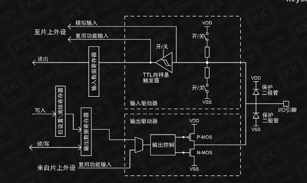
接着经过 TTL 肖特基触发器，也就是施密特触发器，把带毛刺的模拟波形整理成干净的高低电平。整理完才分成两路：一路进输入数据寄存器（CPU 读 IDR 时看到的值），一路去片上外设。
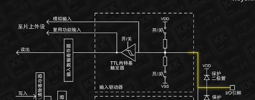
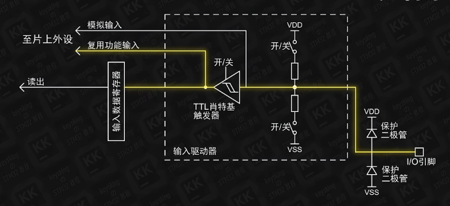
后一路是复用功能的由来：引脚除了能被 CPU 读，还能直接送给片上外设，串口的异步接收就是这么取得电平的。
第二步：进 EXTI
从输入驱动器出来，信号还会到达另一个结构：外部中断/事件控制器（EXTI）。下面这张是它的内部。输入线从右边进来，先经过边沿检测电路，往上分到两个触发选择寄存器；认出指定的边沿以后，信号向左经或门到请求挂起寄存器，再经与门到 NVIC。下面那条支路通往脉冲发生器，那是「事件」而不是「中断」，不进 CPU。
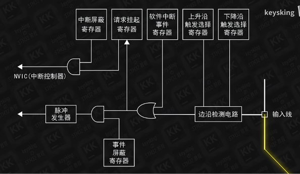
STM32F1 里这样的线有 19 条，每条都配一套这样的寄存器。前 16 条是 EXTI0 到 EXTI15，编号和 GPIO 端口的编号对应：PA0、PB0、PC0 都接到 EXTI0，PB12 接的就是 EXTI12。
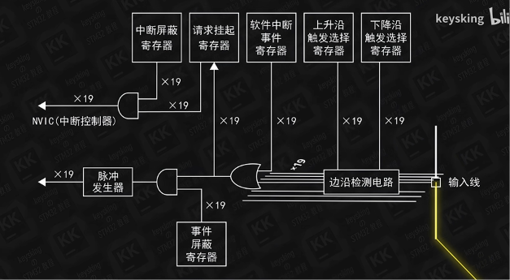
第三步：边沿检测听谁的
边沿检测电路认哪种跳变，由两个寄存器说了算：上升沿触发选择寄存器和下降沿触发选择寄存器。CubeMX 里 GPIO mode 选的那一项，落到硬件上就是这两个寄存器里的两位。
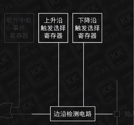
这次配的是下降沿触发，所以第 12 位在上升沿寄存器里是 0，在下降沿寄存器里是 1：
上升沿触发选择寄存器：bit12 = 0，不认上升沿
下降沿触发选择寄存器：bit12 = 1，认下降沿
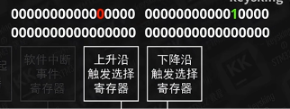
第四步：挂起位
检测到下降沿之后，电路往后送一个高电平，经或门抵达请求挂起寄存器，第 12 位置 1。或门的另一个输入接软件中断事件寄存器——那是用程序模拟一次中断的入口，这次实验用不到它。
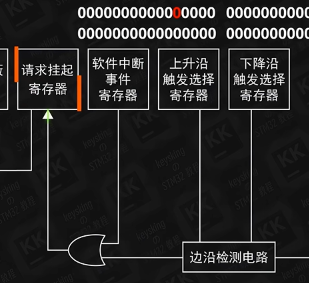
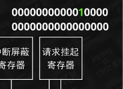
第五步：屏蔽位
挂起位只说明有事件发生，能不能通知 CPU 还要看与门另一头：中断屏蔽寄存器的第 12 位。这一位也是 1，高电平才过得去；否则信号到此为止，CPU 不会知道。
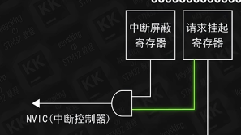
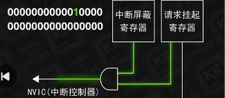
所以这里有两处独立的设置：触发方式决定「哪种边沿算数」，屏蔽位决定「算数的事件要不要报给 CPU」。CubeMX 的 NVIC 面板那一勾排在这两者之后，管的是 NVIC 收不收这条线。
第六步：向量表
经过与门之后，信号进入 NVIC。NVIC 里有一张中断向量表，每一行是一个中断源和它对应的处理函数。EXTI0 到 EXTI4 各自占一行；EXTI5 到 EXTI9 合并成一行，EXTI10 到 EXTI15 合并成另一行。这就解释了为什么 PB12（EXTI12）触发的是 EXTI15_10_IRQHandler，而不是什么 EXTI12_IRQHandler。
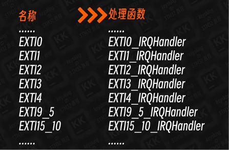
最后：把挂起位清掉
NVIC 会一直检查这条线是否还处于激活状态。处理函数执行完，挂起位如果还是 1，函数会被再调用一次，接着再调用一次。所以要在这个函数末尾清挂起位。CubeMX 生成的工程已经把这一步写好了，就是那行 HAL_GPIO_EXTI_IRQHandler(KEY1_Pin)。它内部先判断这一位有没有置起，然后调用 __HAL_GPIO_EXTI_CLEAR_IT 清除，最后进回调：
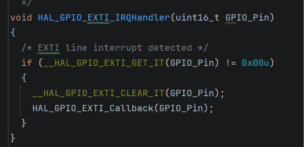
也正因为清挂起位在函数末尾，自己写的业务代码才要放在 USER CODE BEGIN … 0 那一段——模板留的位置就在清除挂起位之前。
优先级与 HAL_Delay 的卡死
两个中断同时到来时谁先执行，以及这个顺序为什么会把 HAL_Delay 变成死循环。
谁先跑
两个中断同时到达，或者一个正在执行、另一个进来，谁先谁后由优先级决定。STM32 把优先级分成两层：抢占优先级（Preemption）和响应优先级（Sub）。两个数字都是越小越优先，和平时读数字的习惯相反，容易记反。
两个中断同时到：先比抢占优先级，数字小的先执行；抢占相同，再比响应优先级；两层都相同，就按向量表里的先后顺序。
A 正在执行，B 突然到来，这时只看抢占优先级。B 的数字比 A 小，A 就地停下，B 执行完再回来继续执行 A；B 不比 A 优先，B 只能等 A 整段执行完再开始。
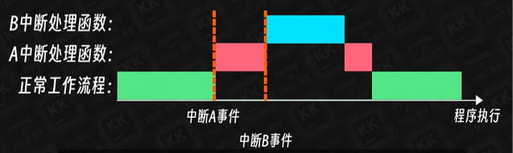
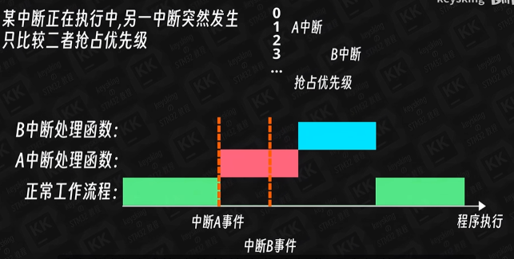
HAL_Delay 怎么卡死的
HAL_Delay 的问题在这层关系里。它不靠空循环计数，靠的是 SysTick：系统运行起来后，SysTick 每 1ms 进一次中断，HAL 库在这时把一个全局变量 uwTick 加一。HAL_Delay 记下进入时的值，然后在 while 里反复检查 uwTick 增加得够不够。
/* 简化后的逻辑，不是库里的原码 */
void HAL_Delay(uint32_t Delay)
{
uint32_t tickstart = HAL_GetTick(); // 记下进门前毫秒数
uint32_t wait = Delay;
while ((HAL_GetTick() - tickstart) < wait) {
// 在这里等，等 SysTick 把 uwTick 推上去
}
}如果当前这个按键中断的抢占优先级不低于 SysTick——数字更小、或者相同——SysTick 就进不来，uwTick 停在原地，while 永远等不到条件成立。程序卡在这句 HAL_Delay(10) 上出不来，表现是整个板子没有反应。
两处优先级的作用：第 3 节里 SysTick 设 0、EXTI 设 1，目的都是让 SysTick 能抢占按键中断，中断里那个 10ms 的等待才能正常结束。反过来配，编译能过、下载能跑，一按键就卡死。
还有一个细节是优先级的位宽。每个中断的优先级寄存器给 4 个二进制位，这 4 位怎么分成抢占和响应，由优先级分组决定。一般保持默认：4 位全部给抢占，响应优先级恒为 0。这次实验就是这种默认。
4 位全部用于抢占优先级（默认分组）
速查
把这次改动的地方收在一张表里，下次做类似的按键中断可以对照着来。
| 位置 | 设置 | 为什么 |
|---|---|---|
| PB12 | GPIO_EXTI12，User Label 写 KEY1 | 让这个引脚走中断线 12 |
| GPIO mode | External Interrupt Mode with Falling edge trigger detection | 按键按下是电平从高变到低 |
| GPIO Pull | Floating | 外部已有 10K 上拉，内部不用再挂 |
| NVIC | EXTI line[15:10] 勾 Enabled，Preemption = 1 | 这条中断线才能进入 CPU |
| NVIC | Time base (SysTick) Preemption = 0 | 中断里的 HAL_Delay 要靠 SysTick 推进 |
| 处理函数 | USER CODE 里先 HAL_Delay(10)、再读引脚、再翻转 | 消抖，并且把业务代码放在清挂起位之前 |
容易踩的坑
- 引脚配了，NVIC 没勾。边沿检测和挂起位照常工作，信号到 NVIC 就断了，现象是「按了没反应」。
- 挂起位没清。
HAL_GPIO_EXTI_IRQHandler(KEY1_Pin)被删掉，或者自己写的代码放到了它后面，中断会一直重复进入，看着像「只进一次就再也不动」。 - 没消抖。一次按压的一串下降沿被当成好几次中断，灯亮暗两下。
- 优先级设反。中断里调
HAL_Delay，SysTick 进不来，uwTick不动，一按键就卡死。 - 事件模式当成中断用。GPIO mode 选成 External Event，信号经脉冲发生器，NVIC 那边收不到任何东西。
这套流程放到别的引脚上同样成立：换引脚就换 EXTI 编号，换触发方式就换边沿，其余寄存器链路一模一样。